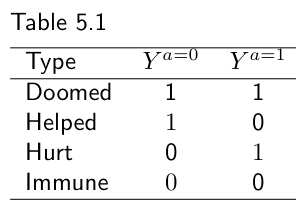
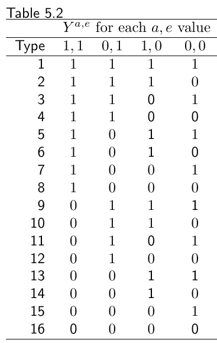
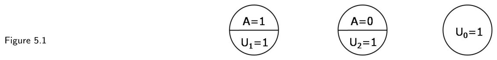
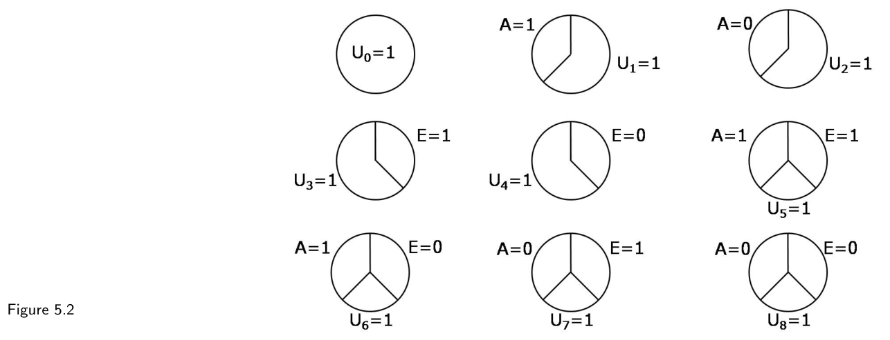
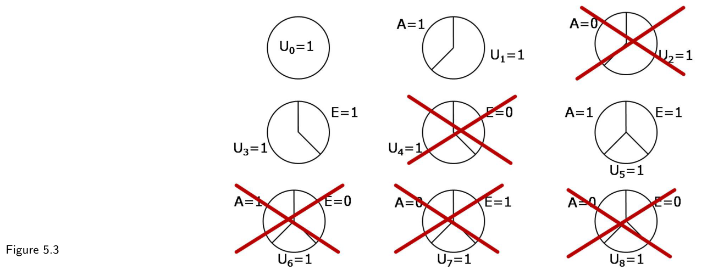

第一部分 · 无模型的因果推断 · Part I — Causal inference without models
第 5 章 · 交互作用
Hernán MA, Robins JM（2020）. Causal Inference: What If. Chapter 5. 本页为中文全文翻译，附译注。
还是那个随机化试验，它要回答的因果问题是："一个人抬头看天，会不会带动路人也跟着抬头？"到目前为止，我们关心的始终是单项处理（抬头看）在整个人群、或其中某个子群中的因果效应。然而，许多因果问题其实问的是两项或更多项同时施加的处理的效应。举例来说，假设除了随机决定你抬不抬头之外，研究者还随机决定你站在街上时是穿着衣服还是光着身子。这样我们就能问出这样的问题：如果你穿着衣服，你抬头的因果效应是多少？如果你光着身子呢？如果这两个因果效应不同，我们就说这两项处理（抬头看与穿衣服）在导致结局的过程中存在交互作用。当对两项或更多处理的联合干预变得可行时，识别出交互作用就让我们得以实施那些最有效的干预。因此，理解交互作用这个概念，是因果推断绕不开的一步。本章在我们已经很熟悉的反事实框架内、以及在充分成分病因框架内，给出两项处理之间交互作用的形式化定义。
5.1 交互需要联合干预
假设在我们的心脏移植例子里，个体在被分配去接受心脏移植（A = 1）或者不移植（A = 0）之前，先被分配去接受复合维生素（E = 1）或者不服维生素（E = 0）。现在我们可以把所有个体分进 4 个处理组：服维生素并移植（E = 1, A = 1）、服维生素不移植（E = 1, A = 0）、不服维生素但移植（E = 0, A = 1）、不服维生素也不移植（E = 0, A = 0）。对每个个体，我们现在可以设想 4 个潜在结局（或反事实结局），在这 4 种处理组合下各有一个：Ya=1,e=1、Ya=1,e=0、Ya=0,e=1 和 Ya=0,e=0。一般而言，个体的反事实结局 Ya,e 是这么回事：如果我们干预把该个体的 A 与 E 的取值分别设为 a 与 e，本会观测到的结局。我们把对两项或更多处理的干预称为联合干预（joint intervention）。
边注 只干预处理 A 所对应的反事实 Ya，在观测到的 E 取值为 e 时就是联合反事实 Ya,e，即 Ya = Ya,E。事实上，一致性（consistency）是这一递归代入的一个特例。具体来说，观测到的 Y = YA = YA,E，这正是我们对一致性的定义。另见技术要点 6.2。
现在我们可以在反事实框架内给出交互作用的定义了。如果在把 E 设为 1 的联合干预之后，A 对 Y 的因果效应，与在把 E 设为 0 的联合干预之后 A 对 Y 的因果效应不同，我们就说两项处理 A 与 E 之间存在交互作用。举个例子，如果"人人都服维生素时移植对生存的因果效应"与"没人服维生素时移植对生存的因果效应"不同，那么移植 A 与维生素 E 之间就存在交互作用。
当因果效应以风险差为尺度度量时，我们说在人群中 A 与 E 之间在加性尺度（additive scale）上存在交互作用，如果
举个例子，假设人人都服维生素时移植 A 的因果风险差 Pr[Ya=1,e=1 = 1] − Pr[Ya=0,e=1 = 1] 是 0.1，而没人服维生素时移植 A 的因果风险差 Pr[Ya=1,e=0 = 1] − Pr[Ya=0,e=0 = 1] 是 0.2。我们说 A 与 E 之间在加性尺度上存在交互作用，因为前一个风险差小于后一个风险差 Pr[Ya=1,e=0 = 1] − Pr[Ya=0,e=0 = 1]。用初等代数很容易证明，这个不等式蕴含：人人都接受移植时维生素 E 的因果风险差 Pr[Ya=1,e=1 = 1] − Pr[Ya=1,e=0 = 1]，也小于没人接受移植 A 时维生素 E 的因果风险差 Pr[Ya=0,e=1 = 1] − Pr[Ya=0,e=0 = 1]。换句话说，我们可以等价地把 A 与 E 之间在加性尺度上的交互作用定义为
边注 上面并列给出的两个不等式说明：在交互作用的定义中，处理 A 与处理 E 地位相等。
现在我们来复习一下交互作用与效应修饰之间的差别。如上一章所述，当 A 对 Y 的平均因果效应随变量 V 的取值而变化时，我们说 V 是 A 对 Y 效应的修饰因子。请注意，效应修饰这个概念指的是 A 的因果效应，而不是 V 的因果效应。举例来说，在表 4.1 中性别是心脏移植效应的效应修饰因子，但我们从来没有讨论过性别对死亡的作用。因此，当我们说 V 修饰了 A 的效应时，我们并没有把 V 与 A 当作地位相等的两个变量来看待，因为只有 A 被视为一个我们原则上可以干预的变量。也就是说，效应修饰的定义涉及的是反事实结局 Ya，而不是反事实结局 Ya,v。相比之下，A 与 E 之间交互作用的定义给了处理 A 与处理 E 相等的地位，这一点正体现在上面那两个等价的交互作用定义中。交互作用这个概念指的是两项处理 A 与 E 的联合因果效应，因而涉及的是联合干预下的反事实结局 Ya,e。
5.2 识别交互
在前几章里，我们描述了识别处理 A 对结局 Y 的平均因果效应（无论是在整个人群中还是在某个子群中）所需要的条件。三项关键的识别条件是可交换性、可阳性性与一致性。由于交互作用关注的是两项（或更多项）处理 A 与 E 的联合效应，识别交互作用就要求对两项处理分别满足可交换性、可阳性性与一致性。
假设维生素 E 由研究者随机地、无条件地分配。那么可阳性性与一致性成立，并且已处理的 E = 1 与未处理的 E = 0 期望是可交换的。也就是说，如果所有人都被分配到移植 A = 1 且维生素 E = 1 时本会观测到的风险，等于所有接受了 E = 1 的人本应被分配到移植 A = 1 时本会观测到的风险。
边注 形式上，边际风险 Pr[Ya=1,e=1 = 1] 等于条件风险 Pr[Ya=1 = 1|E = 1]。
因此，我们可以把 A 与 E 之间在加性尺度上的交互作用定义改写为
这恰恰就是"E 在加性尺度上修饰了 A 的效应"这一说法的定义。换句话说，当处理 E 是被随机分配的时候，交互作用与效应修饰这两个概念就重合了。第 4 章中用来识别 V 对 A 效应之修饰的方法，现在只需把效应修饰因子 V 换成处理 E，就可以用来识别 A 与 E 之间的交互作用。
现在假设处理 E 并不是由研究者分配的。要判断 A 与 E 之间是否存在交互作用，我们仍然需要算出四个边际风险 Pr[Ya,e = 1]。在没有边际随机化的情况下，在通常的可识别性假设下，可以通过对测量的协变量作条件标准化或条件 IP 加权，算出处理 A 与处理 E 的这些风险。对这个问题还有一种等价的概念化方式：与其把 A 与 E 看作各自取 2 个可能水平（1 或 0）的两项独立处理，不如把 AE 看作一项有 4 个可能水平（11、01、10、00）的合并处理。在这样的概念化之下，识别两项处理之间的交互作用，与识别我们在前几章中讨论过的一项处理的因果效应并无不同。相同的方法、在相同的可识别性条件下都可以使用。唯一的区别在于，现在我们关心的处理有更长的取值列表，因而反事实结局的数量也更多。
有时人们可能愿意只对处理 A 假定（条件）可交换性，而不对处理 E 作此假定，例如在一项随机化试验中按 E 定义的亚组来估计 A 的因果效应时。在这种情况下，一般无法判断 A 与 E 之间是否存在交互作用，但仍然可以判断 E 是否存在效应修饰。原因在于：计算 A 在 E 所定义的各个层内的效应，并不需要任何涉及 E 的可识别性假设。在上一章中，对于我们不愿为其可交换性、可阳性性与一致性作假设的变量，我们用的是记号 V（而非 E）。例如，我们曾得出结论说移植 A 的效应被国籍 V 修饰了，但我们从未为 V 的效应要求任何可识别性假设，因为我们对用数据算出 V 对 Y 的因果效应并不感兴趣。在 4.2 节中我们从实质角度论证过，V 是一个替代效应修饰因子（surrogate effect modifier）：也就是说，V 并不作用于结局，因此不与 A 交互——没有作用，就没有交互。但 V 确实是 A 对 Y 效应的修饰因子，因为 V 与某个真正对 Y 有作用、并且与 A 交互的、却未能识别的变量相关（它是这个变量的代理）。因此，"另一个变量修饰了 A 的效应"与"A 与该变量之间存在交互作用"这两件事可以同时成立，也可以不同时成立。
边注 A 与 E 之间存在交互作用、却没有 E 对 A 效应的修饰，这在逻辑上也是可能的，尽管大概很少见，因为它要求 A 有双向效应、并且出现精确的抵消（VanderWeele 2009b）。
在上面的段落里我们论证过：识别 A 与 E 之间交互作用的一个充分条件是，对联合处理 (A, E)（它有四个可能取值 (0, 0)、(0, 1)、(1, 0)、(1, 1)）而言，可交换性、可阳性性与一致性全部成立。此时就可以用标准化或 IP 加权来估计这两项处理的联合效应，进而评估它们之间的交互作用。在第三部分我们会说明，当两项处理发生在不同时点时，这个条件并非必要。在第一部分的余下章节（本章除外）以及第二部分的大部分内容中，我们将专注于单项处理 A 的因果效应。
在第 1 章中我们描述过决定性与非决定性的反事实结局。到目前为止，为了简明我们都使用决定性反事实。然而，我们迄今讨论过的关于人群因果效应与交互作用的结果，没有一条要求反事实结局是决定性的。与之相反，本章下一节的内容只在反事实是决定性的情形下才适用。此外，我们还假定处理与结局都是二值的。
5.3 反事实反应类型与交互
个体可以按其决定性反事实反应来分类。例如在表 4.1（与表 1.1 相同）中，有四类人：无论接受什么处理都会发病的"注定发病者"（doomed，Artemis、Athena、Persephone、Ares），无论接受什么处理都不会发病的"免疫者"（immune，Demeter、Hestia、Hera、Hades），只有不接受处理才会发病的"被帮助者"（helped，Hebe、Kronos、Poseidon、Apollo、Hermes、Dionysus），以及只有接受处理才会发病的"被伤害者"（hurt，Rheia、Leto、Aphrodite、Zeus、Hephaestus、Polyphemus）。反事实反应的每一种组合通常被称为一个反应型式或反应类型（response pattern / response type）。表 5.1 列出了四种可能的反应类型。

a = 0 与 a = 1 下的反事实结局 Ya，行为反应类型的名称：注定发病（doomed，1, 1）、被帮助（helped，1, 0）、被伤害（hurt，0, 1）、免疫（immune，0, 0）。当考虑两项二值处理 A 与 E 时，共有 16 种可能的反应类型，因为每个个体有四个反事实结局，分别对应 A 与 E 上四种可能的联合干预：(1, 1)、(0, 1)、(1, 0) 和 (0, 0)。表 5.2 给出了两项处理下的 16 种反应类型。本节要探讨的，正是当两项处理 A、E 与结局 Y 都是二值时，反应类型与交互作用存在与否之间的关系。

Ya,e 在 (a, e) = (1, 1)、(0, 1)、(1, 0)、(0, 0) 四个取值下的值。类型 1 是 (1, 1, 1, 1)，类型 16 是 (0, 0, 0, 0)；类型 8 是 (1, 0, 0, 0)，即只有在两项处理同时施加时才发病。表 5.2 中的第一类个体的反事实结局 Ya=1,e=1 等于 1，这意味着这类个体若同时接受移植与维生素治疗就会死亡。另外三个反事实结局也等于 1，即 Ya=1,e=1 = Ya=0,e=1 = Ya=1,e=0 = Ya=0,e=0 = 1，这意味着这类个体若接受（不移植、服维生素）、（移植、不服维生素）或（不移植、不服维生素），同样会死亡。换句话说，处理 A 与处理 E 对这类个体的结局都没有任何作用。不论给他分配什么联合处理，他都会死亡。现在考虑第 16 类。所有反事实结局都是 0，即 Ya=1,e=1 = Ya=0,e=1 = Ya=1,e=0 = Ya=0,e=0 = 0。同样地，处理 A 与处理 E 对这类个体的结局也没有任何作用。不论给她分配什么联合处理，她都会活下来。如果人群中的所有个体都属于第 1 类和第 16 类，我们就会说 A 与 E 对 Y 都没有任何因果效应；针对联合处理 (A, E) 的尖锐因果零假设（sharp causal null hypothesis）成立。
边注 Miettinen（1982）描述了两项二值处理与二值结局下的 16 种可能反应类型。
边注 Greenland 与 Poole（1988）指出，Miettinen 的反应类型在重编码 A 与 E（即交换 0 与 1 两个标签）之下并非保持不变。他们把表 5.2 的 16 种反应类型划分成了下面那三个在重编码下保持不变的等价类。
现在把注意力转向第 4、6、11、13 类。第 4 类个体只有在服用维生素时才会死亡，不论他是否接受移植，即 Ya=1,e=1 = Ya=0,e=1 = 1 且 Ya=1,e=0 = Ya=0,e=0 = 0。第 13 类个体只有在不服维生素时才会死亡，不论他是否接受移植，即 Ya=1,e=1 = Ya=0,e=1 = 0 且 Ya=1,e=0 = Ya=0,e=0 = 1。第 6 类个体只有在接受移植时才会死亡，不论他是否服用维生素，即 Ya=1,e=1 = Ya=1,e=0 = 1 且 Ya=0,e=1 = Ya=0,e=0 = 0。第 11 类个体只有在不接受移植时才会死亡，不论他是否服用维生素，即 Ya=1,e=1 = Ya=1,e=0 = 0 且 Ya=0,e=1 = Ya=0,e=0 = 1。
在表 5.2 的 16 种可能反应类型中，我们已经识别出 6 种类型（编号 1、4、6、11、13、16）具有一个共同特征：对具有这类反应类型的个体，处理 A 对结局 Y 的因果效应不随处理 E 的取值而变化，处理 E 对结局 Y 的因果效应也不随处理 A 的取值而变化。在一个人人属于这 6 种反应类型的人群中，处理 A 在处理 E 存在时的因果效应（以因果风险差 Pr[Ya=1,e=1 = 1] − Pr[Ya=0,e=1 = 1] 度量），等于处理 A 在处理 E 不存在时的因果效应（以因果风险差 Pr[Ya=1,e=0 = 1] − Pr[Ya=0,e=0 = 1] 度量）。也就是说，如果人群中所有个体的反应类型都是 1、4、6、11、13 和 16，那么 A 与 E 之间在加性尺度上就不存在交互作用。
A 与 E 之间加性交互作用的存在，蕴含着人群中有这样一些个体：如果不知道 E 的取值，就无法确定他们 A = a 之下那两个反事实结局的值，反之亦然。也就是说，下列三类中至少必有一类非空：
- 那些只在四种处理组合中一种下会发病的人（表 5.2 中的第 8、12、14、15 类）；
- 那些在两种处理组合下会发病的人，且具有这样的性质——每项处理的效应在另一项处理的各个水平下恰好相反（第 7 类与第 10 类）；
- 那些在四种处理组合中三种下会发病的人（第 2、3、5、9 类）。
另一方面，A 与 E 之间加性交互作用的不存在，则意味着：要么人群中没有任何个体属于上面描述的三类中的任何一类，要么偏离可加性的量恰好以相反的符号完美抵消。这样的抵消会发生，例如，如果第 7 类与第 10 类的个体比例相等，或者第 8 类与第 12 类的个体比例相等。
边注 关于"即使存在交互类型却仍因抵消而得到可加性"的更多讨论，见 Greenland、Lash 与 Rothman（2008）。
把个体按反事实反应类型分类，"交互作用"这个词的含义就清楚了（另见精细辨析 5.1）。接下来我们引入一个工具，来刻画两项处理之间交互作用所涉及的因果机制。
5.4 充分原因
把个体按反事实反应类型分类，交互作用的含义就清楚了。现在我们引入一个工具，来表征两项处理之间交互作用所涉及的因果机制。再来看我们的心脏移植例子，这次只有一项处理 A。正如上一节所回顾的，有些个体在接受处理时死亡，有些个体在接受处理时死亡，有些个体无论如何都会死亡，还有些个体无论如何都不会死亡。这种多样的反应类型表明，处理 A 并不是唯一决定结局 Y 是否发生的变量。
取那些实际接受了处理的个体。其中只有一部分死亡了，这意味着单靠处理不足以必然地产生结局。举一个被大大简化了的例子：假设心脏移植 A = 1 只在对麻醉剂过敏的个体中导致死亡。我们把这样一组最小的背景因素——它们与 A = 1 一起足以必然地产生结局——记作 U1。处理（A = 1）与麻醉剂过敏（U1 = 1）同时存在，是结局 Y 的一个最小充分原因（minimal sufficient cause）。
现在取那些实际没有接受处理的个体。同样只有其中一部分死亡了，这意味着单靠"不接受处理"也不足以产生结局。再举一个被大大简化了的例子：假设不做心脏移植 A = 0 只在射血分数低于 20% 的个体中导致死亡。把这样一组与 A = 0 一起足以产生结局的最小背景因素记作 U2。不接受处理（A = 0）与射血分数低（U2 = 1）同时存在，是结局 Y 的另一个充分原因。
边注 按照背景因素的定义，二值变量 U 不可被干预，也不会受到处理 A 的影响。
最后，假设有些个体既没有 U1 也没有 U2，而且无论接受处理与否他们本来都会发病。这些"注定发病"个体的存在意味着，还存在另外一些背景因素，它们本身就足以产生结局。举一个被大大简化了的例子：假设研究开始时患有胰腺癌的所有个体都会死亡。我们把这样一组足以在不论处理状态如何的情况下产生结局的最小背景因素记作 U0。胰腺癌的存在（U0 = 1）是结局 Y 的又一个充分原因。
我们描述了结局的 3 个充分原因：在 U1 存在下的处理 A = 1、在 U2 存在下的不处理 A = 0，以及不论处理状态如何都存在的 U0。每个充分原因都有一个或多个成分，比如第一个充分原因就有 A = 1 与 U1 = 1 两个成分。图 5.1 用一个圆表示一个充分原因，用圆内的扇形表示它的各个成分。充分成分病因（sufficient-component cause）这个说法常被用来统称充分原因及其成分。

A 下三个充分成分病因的图形表示。每个圆是一个充分原因，圆内的扇形是它的成分：第一个圆是处理 A = 1 与麻醉剂过敏 U1 = 1；第二个圆是不处理 A = 0 与射血分数低 U2 = 1；第三个圆是胰腺癌 U0 = 1，它不含任何处理成分，因此单独一个成分就构成一个充分原因。充分成分病因的图形表示有助于看清效应修饰的一个关键后果：如第 4 章所讨论的，处理 A 的因果效应大小取决于效应修饰因子的分布。设想两个假想情形。在第一种里，人群中只有 1% 的个体 U1 = 1（即麻醉剂过敏）。在第二种里，人群中有 10% 的个体 U1 = 1。这两个人群中 U2 与 U0 的分布完全相同。现在，我们分别在每个人群中做一项心脏移植 A 的随机化试验，其中一半个体被分配到 A = 1。心脏移植 A 对死亡的平均因果效应在第二个人群中会更大，因为其中有更多个体在接受处理时易发病。3 个充分原因中的 A = 1 加 U1 = 1，在第二个人群中的常见程度是第一个人群的 10 倍，而另外两个充分原因在两个人群中出现的频率相同。
充分成分病因的图形表示也有助于看清交互作用的另一个概念，下一节就要讲它。首先我们需要描述两项处理 A 与 E 的充分原因。再来看我们的维生素与心脏移植例子。我们此前已经描述了死亡的 3 个充分原因：A（或 E）的存在与否无关紧要、接受移植 A 而不论维生素 E 如何，以及不接受移植 A 而不论维生素 E 如何。在两项处理的情形下，我们还需要补上另外两种死亡方式：服用维生素 E 而不论移植 A 如何，以及不服维生素而不论移植 A 如何。我们还需要补上另外四个充分原因，以涵盖那些只在 A 与 E 的某种特定取值组合下才会死亡的人。于是，视哪些背景因素存在，共有 9 种可能的死亡方式：
- 由处理
A（处理E无关紧要）； - 由不处理
A（处理E无关紧要）； - 由处理
E（处理A无关紧要）； - 由不处理
E（处理A无关紧要）； - 由处理
A与E两者共同； - 由处理
A与不处理E共同； - 由处理
E与不处理A共同； - 由不处理
A与E两者共同； - 由其他机制（处理
A与E两者都无关紧要）。
边注 Greenland 与 Poole（1988）最先枚举出这 9 个充分原因。
换句话说，共有 9 种可能的充分原因，其处理成分分别是只有 A = 1、只有 A = 0、只有 E = 1、只有 E = 0、A = 1 与 E = 1、A = 1 与 E = 0、A = 0 与 E = 1、A = 0 与 E = 0，以及 A 与 E 都不构成成分。每个这样的充分原因都包含一组来自 U1, …, U8 与 U0 的背景因素。图 5.2 表示了两项处理 A 与 E 的 9 个充分成分病因。

A 与 E 的 9 个充分成分病因。每一行三个圆，从上到下依次为：单独一个成分的 U0 = 1（其他机制）；A = 1 与 U1 = 1、A = 0 与 U2 = 1、E = 1 与 U3 = 1、E = 0 与 U4 = 1（各含一个处理成分与一个背景成分）；以及 A = 1, E = 1 与 U5 = 1、A = 1, E = 0 与 U6 = 1、A = 0, E = 1 与 U7 = 1、A = 0, E = 0 与 U8 = 1（各含两个处理成分与一个背景成分）。边注 这种充分成分病因的图形表示常被称为"因果饼"（the causal pies）。
对于二值结局与两项处理，9 个充分成分病因并非在所有情形下都存在。举例来说，如果服用维生素 E = 1 不会杀死任何一个个体（无论其处理 A 如何），那么含 E = 1 成分的那 3 个充分原因就不会出现。这 3 个充分原因的存在意味着有些个体（例如那些 U3 = 1 的人）会因服用维生素（E = 1）而被杀死，也就是说，不给他们服维生素（E = 0）就能预防他们的死亡。
5.5 充分原因交互
"处理 A 与 E 之间存在交互作用"这个说法在日常语言中的用法，会让人联想到存在某种因果机制，两项处理通过它协同（"交互"）产生某个结局。有意思的是，反事实框架内对交互作用的定义并不要求我们了解这些机制中的任何一个，甚至也不要求两项处理真的协同作用（见精细辨析 5.3）。在我们的维生素 E 与心脏移植 A 的例子里，我们说 A 与 E 之间存在交互作用，如果 A 在人人都接受 E 时的因果效应，与 A 在没人接受 E 时的因果效应不同。也就是说，交互作用是由反事实量之间的对比定义的，因此只要在一项理想的随机化试验中、A 与 E 两项处理各自的可交换性、可阳性性与一致性都成立，就可以把它识别出来。我们完全不必去深究那些使交互作用得以出现的因果机制（物理的、化学的、生物学的、社会学的……）。
本节描述交互作用的第二个概念，它或许能让我们更接近一步：由处理 A 与 E 产生结局的因果机制。这第二个交互作用概念不是建立在反事实对比之上，而是建立在充分成分病因之上，因此我们把它称为充分成分病因框架内的交互作用，简称充分原因交互（sufficient cause interaction）。
如果 A 与 E 共同出现在某个充分原因之中，那么人群中就存在 A 与 E 之间的充分原因交互。举个例子，假设背景因素 U5 = 1 的个体在同时接受维生素（E = 1）与心脏移植（A = 1）时会发病，但在只接受其中一项治疗时不会发病。那么，只要存在一个 U5 = 1 的个体，A 与 E 之间就存在充分原因交互。由此可以推出：如果存在反事实反应为 Ya=1,e=1 = 1 且 Ya=0,e=1 = Ya=1,e=0 = 0 的个体，那么 A 与 E 之间就存在充分原因交互。
充分原因交互可以是协同的，也可以是拮抗的。当 A = 1 与 E = 1 出现在同一个充分原因中时，处理 A 与处理 E 之间存在协同作用（synergism）；当 A = 1 与 E = 0（或 A = 0 与 E = 1）出现在同一个充分原因中时，则存在拮抗作用（antagonism）。换个角度，也可以把 A 与 E 之间的拮抗作用看作 A 与"不处理 E"（或"不处理 A"与 E）之间的协同作用。
与反事实框架下交互作用的定义不同，充分原因交互明确地指向涉及处理 A 与 E 的因果机制。人们可能会以为，识别充分原因交互的存在就需要对这些机制有详细了解。事实证明情况并非总是如此：即使我们对这些机制一无所知，有时也能断定充分原因交互存在。具体地说，如果精细辨析 5.1 中的不等式成立，那么 A 与 E 之间就存在协同作用。也就是说，人们完全不必考虑 A 与 E 协同产生结局的因果机制是什么，就能在经验上验证协同作用的存在。这个结果并不令人惊讶，因为反事实反应类型与充分原因之间存在对应关系（见精细辨析 5.2），而且上面那个不等式是充分而非必要条件，也就是说，即便协同作用存在，该不等式也可能不成立。
边注 Rothman（1976）描述了充分成分病因框架内的协同作用与拮抗作用这两个概念。
5.6 反事实还是充分成分病因？
充分成分病因框架与反事实（潜在结局）框架回答的是不同的问题。充分成分病因模型考虑的是这样一些行动、事件或自然状态的集合，它们共同、必然地产生所考察的结局。该模型给出的是对某个特定效应之病因的解释。它回答的问题是："给定某个特定的效应，哪些事件可能是它的病因？"潜在结局模型或反事实模型聚焦于某一个特定的病因或干预，给出的是该病因各种效应的解释。与充分成分病因框架不同，潜在结局框架回答的问题是："如果把某个特定因素干预成与事实不同的取值，会发生什么？"与充分成分病因框架不同，反事实框架并不要求我们详细了解该因素影响结局的机制。
边注 因果的反事实框架，Hume（1748）已经有所暗示。
反事实方法回答的是"会发生什么？"（what happens?）；充分成分病因方法回答的是"它是怎么发生的？"（how does it happen?）。对于本书的内容——估计假想干预之平均因果效应的条件与方法——反事实框架是自然的选择。充分成分病因框架则有助于思考在某个特定结局的产生过程中起作用的因果机制。充分成分病因在因果推断的教学中占有正当的位置，因为它们有助于理解若干关键概念，比如因果效应的大小对背景因素（效应修饰因子）分布的依赖，以及效应修饰、交互作用与协同作用三者之间的关系。
边注 充分成分病因框架由 Mackie（1965）在哲学领域提出。他引入了 Y 的 INUS 条件这个概念：某个条件的一个不充分但必要（Insufficient but Necessary）的部分，而这个条件本身对 Y 而言不必要但充分（Unnecessary but exclusively Sufficient）。
尽管从教学角度看充分成分病因框架很有用，但它对实际数据分析的相关性尚待确定。在其经典形式下，充分成分病因框架是确定性的，其结论依赖于结局的编码方式，并且按定义只限于二值处理与二值结局（或可以重编码为二值变量的变量）。这一限制实际上排除了对任何连续因素的考虑，并把该框架的适用范围限制在二值因素数目不多的情境中。较新的扩展工作把充分成分病因框架推广到随机（stochastic）情境以及分类与有序处理，可能会让这一方法在贴近实际的数据分析中得到更多应用。最后，即便允许这些扩展，我们也很少拥有研究它所区分的那些细微差别所需的大量数据。为了更一般地估计因果效应，反事实框架很可能仍是使用得最多的那个。另外一些表面上平行的框架——因果图、决策理论——如下一章所述，本质上与反事实框架是等价的。
边注 VanderWeele（2010b）给出了向 3 水平处理的推广。VanderWeele 与 Robins（2012）探讨了随机反事实与随机充分原因之间的关系。

A = 0 与 U2 = 1、E = 0 与 U4 = 1、A = 1, E = 0 与 U6 = 1、A = 0, E = 1 与 U7 = 1、A = 0, E = 0 与 U8 = 1。这五个的共同点是都含有一个"某项处理缺席"的成分，而"处理能够预防某些人的结局"正是单调性所排除的情形。剩下的四个——U0 = 1、A = 1 与 U1 = 1、E = 1 与 U3 = 1、A = 1, E = 1 与 U5 = 1——都可能存在。